{kind=link}
News
- I am honored to have received the Computing Innovation Fellowship.
- I started a Postdoc with Sergey Levine at the Berkeley AI Research (BAIR) Lab.
- We are organizing Workshop on Visual Learning and Reasoning for Robotics at RSS 2021.
- We are organizing Tutorial on Deep Representation and Estimation of State for Robotics at IROS 2020.
- We are organizing Workshop on Visual Learning and Reasoning for Robotic Manipulation at RSS 2020.
- New SAIL Blog Post about our recent work on Sequential Problem Solving by Hierarchical Planning in Latent Spaces.
- We released RoboVat: A unified toolkit for simulated and real-world robotic task environments.
Publications

|
Active Task Randomization: Learning Visuomotor Skills for Sequential Manipulation by Proposing Feasible and Novel Tasks
|
| 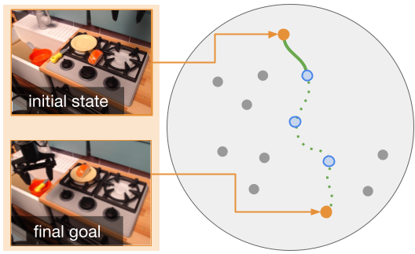 |
Generalization with Lossy Affordances: Leveraging Broad Offline Data for Learning Visuomotor Tasks
|
| 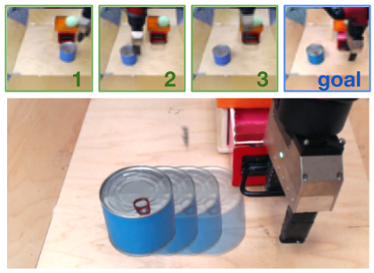 |
Planning to Practice: Efficient Online Fine-Tuning by Composing Goals in Latent Space
|
| 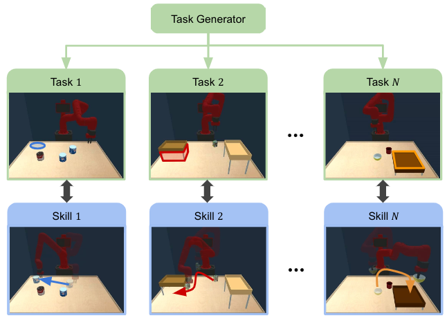 |
Discovering Generalizable Skills via Automated Generation of Diverse Tasks
|
| 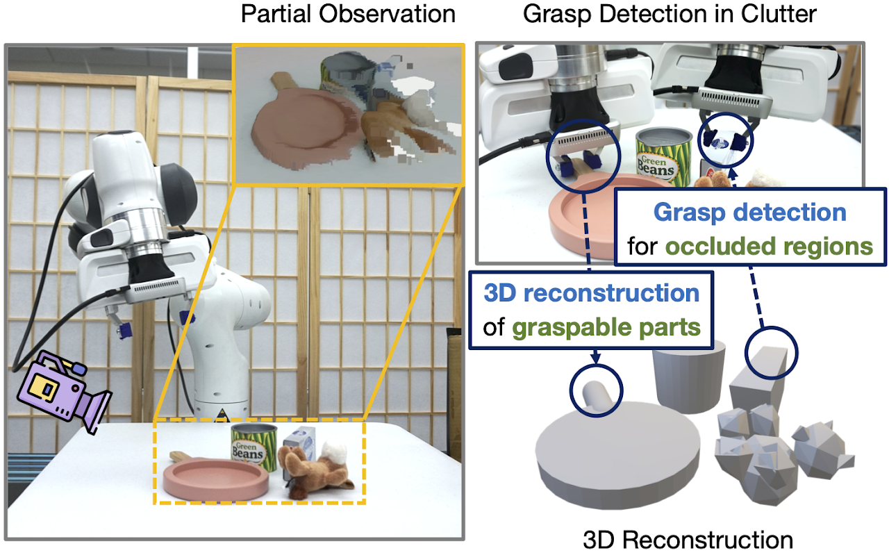 |
Synergies Between Affordance and Geometry: 6-DoF Grasp Detection via Implicit Representations
|
| 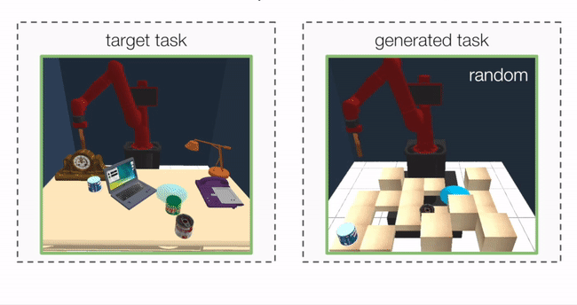 |
Adaptive Procedural Task Generation for Hard-Exploration Problems
|
| 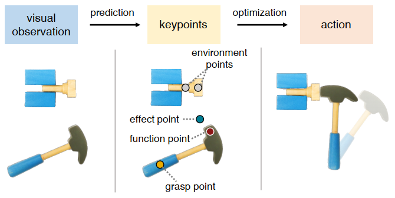 |
KETO: Learning Keypoint Representations for Tool Manipulation
|

|
Dynamics Learning with Cascaded Variational Inference for Multi-Step Manipulation
|
| 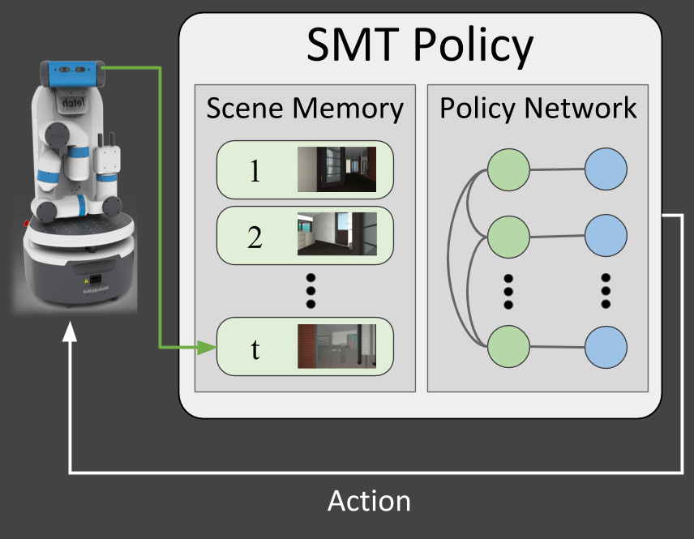 |
Scene Memory Transformer for Embodied Agents in Long-Horizon Tasks
|
| 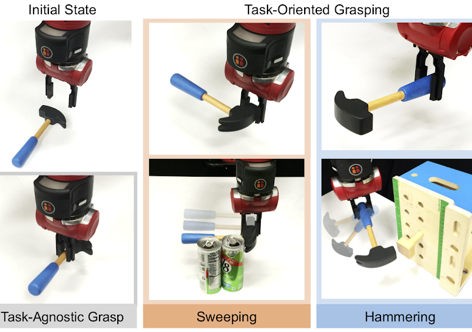 |
Learning Task-Oriented Grasping for Tool Manipulation from Simulated Self-Supervision
|
| 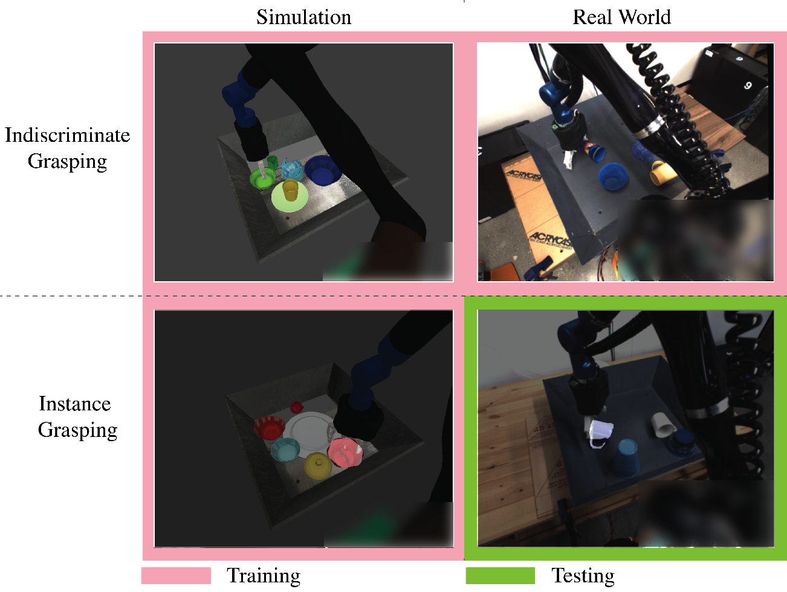 |
Multi-Task Domain Adaptation for Deep Learning of Instance Grasping from Simulation
|
| 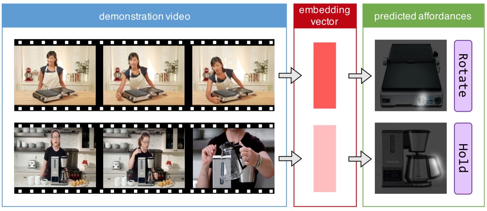 |
Demo2Vec: Reasoning Object Affordances from Online Videos
|
| 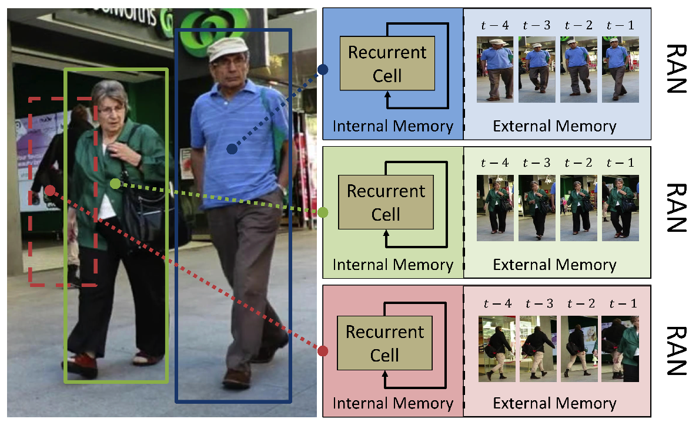 |
Recurrent Autoregressive Networks for Online Multi-Object Tracking
|
| 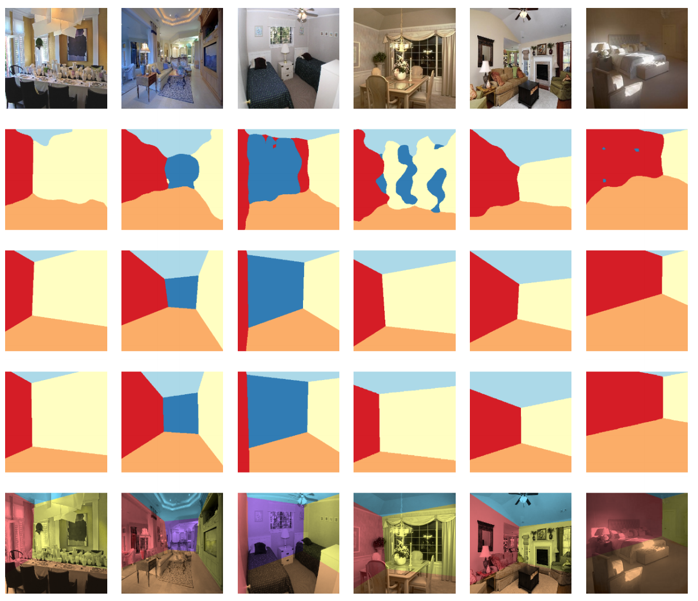 |
DeLay: Robust Spatial Layout Estimation for Cluttered Indoor Scenes
|
Awards and Honors
- Computing Innovation Fellowship, 2021 - 2022
- Stanford Graduate Fellowship, 2014 - 2017
- Award of Excellence in the Microsoft Research Asia (MSRA) Internship Program, 2014
- Member of Spark Innovative Talent Cultivation Program, Tsinghua University, 2012 - 2014
- Comprehensive Scholarship for Academic Excellence, Tsinghua University, 2012 and 2013
Teaching
- Teaching Assistant, Computer Vision, From 3D Reconstruction to Recognition (CS231A), Stanford University, 2021
- Teaching Assistant, Computer Vision, From 3D Reconstruction to Recognition (CS231A), Stanford University, 2018
- Instructor, Stanford AI4ALL Program, Stanford University, 2020